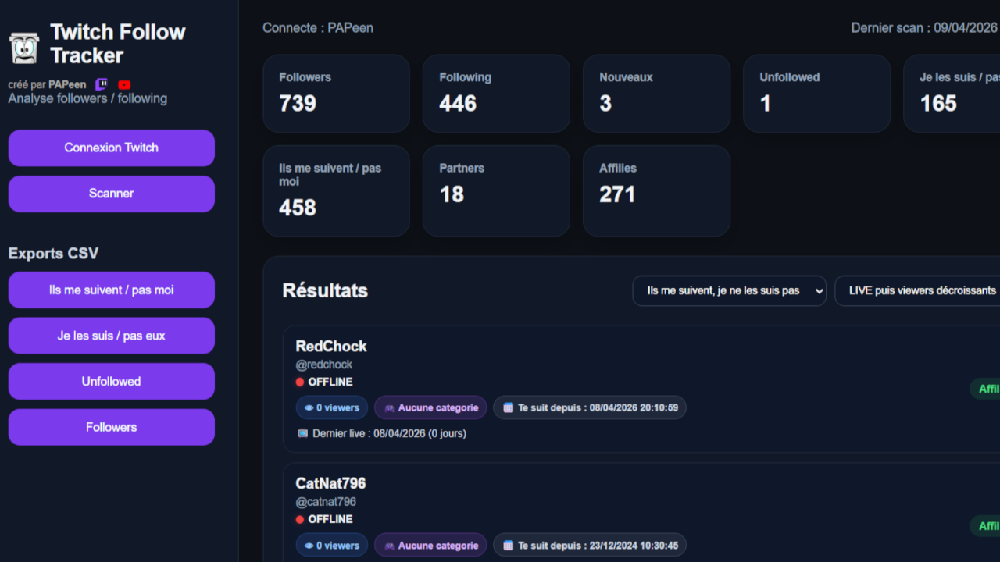
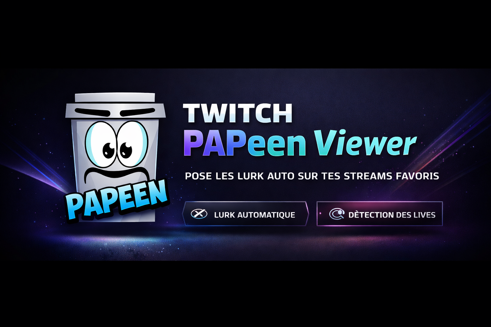

Bienvenue sur ma page de présentation. Ici, vous pouvez découvrir plusieurs logiciels que j’ai créés, avec leur description, des captures d’écran et les liens vers GitHub afin de les télécharger.

Un logiciel pour suivre facilement les followers et les follow back avec une interface pour aider les streamers et streameuses.

Quoi de mieux qu'un logiciel permettant d'être toujours sur tes streams favoris afin de soutenir, même quand tu n'est pas devant ton PC.